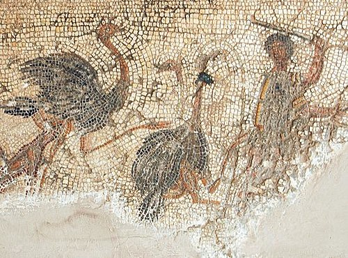
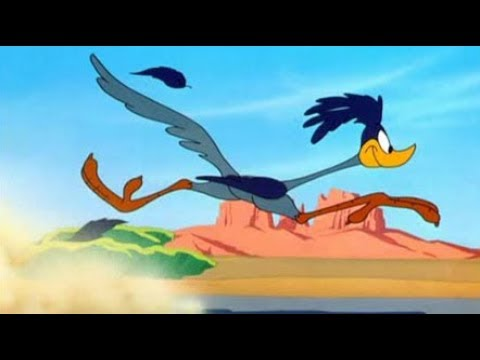

Struțul în Cultură
Struțul a fost prezent în mitologie, artă și cultură populară încă din cele mai vechi timpuri. În Egiptul Antic, penele de struț simbolizau adevărul și justiția, fiind asociate cu zeița Ma'at. Faraonii purtau pene de struț ca semn al autorității și al echilibrului cosmic. Artefactele și picturile descoperite în mormintele egiptene ilustrează adesea struți în scene de vânătoare sau procesiuni ceremoniale.
 În Roma Antică, struții erau aduși din Africa pentru a fi folosiți în jocuri de gladiatori sau ca parte a spectacolelor exotice. Carnea lor era considerată o delicatesă, iar penele erau utilizate în decorațiuni luxoase. Aceste păsări fascinante au fost întotdeauna simboluri ale exotismului, dar și ale puterii imperiale.
În Evul Mediu și perioada Renașterii, struțul era adesea întâlnit în blazoane și steme nobiliare. Penele sale, elegante și impunătoare, erau purtate de cavaleri și nobili ca semn al distincției. În special în heraldică, struțul este reprezentat ținând o potcoavă în cioc – simbol al capacității de a digera chiar și metalul, un mit popular în epocă.
 În cultura modernă, struțul este adesea prezent în literatură, animații și filme. De multe ori este portretizat ca un personaj comic, timid sau ciudat, deseori ironizat pentru presupusa sa tendință de a-și băga capul în nisip – un comportament care, în realitate, este un mit. Această imagine simbolizează evitarea problemelor sau negarea realității.
Struțul a inspirat, de asemenea, designul modei și industria spectacolului. Penele sale au fost folosite în costumațiile dansatoarelor de cabaret, în special în perioada anilor '20, când eleganța exotică era în vogă. Chiar și în zilele noastre, penele de struț sunt considerate un simbol al rafinamentului și sunt utilizate în decoruri fastuoase sau creații de modă haute couture.